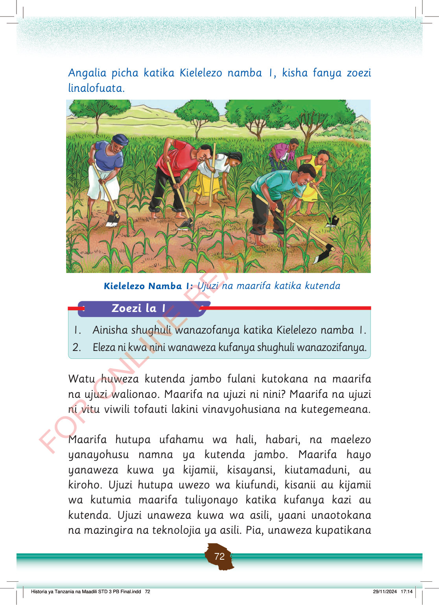

Angalia picha katika Kielelezo namba 1, kisha fanya zoezi linalofuata.
Watu wanafanya kazi shambani kwa kutumia majembe. Wanapalilia mimea ya mahindi pamoja.
Kielelezo Namba 1: Ujuzi na maarifa katika kutenda
Zoezi la 1
1. Ainisha shughuli wanazofanya katika Kielelezo namba 1.
2. Eleza ni kwa nini wanaweza kufanya shughuli wanazozifanya.
Watu huweza kutenda jambo fulani kutokana na maarifa na ujuzi walionao.
Maarifa na ujuzi ni nini?
Maarifa na ujuzi ni vitu viwili tofauti lakini vinavyohusiana na kutegemeana.
Maarifa hutupa ufahamu wa hali, habari, na maelezo yanayohusu namna ya kutenda jambo.
Maarifa hayo yanaweza kuwa ya kijamii, kisayansi, kiutamaduni, au kiroho.
Ujuzi hutupa uwezo wa kiufundi, kisanii au kijamii wa kutumia maarifa tuliyonayo katika kufanya kazi au kutenda.
Ujuzi unaweza kuwa wa asili, yaani unaotokana na mazingira na teknolojia ya asili.
Pia, unaweza kupatikana
Historia ya Tanzania na Maadili STD 3 PB Final.indd 72
29/11/2024 17:14